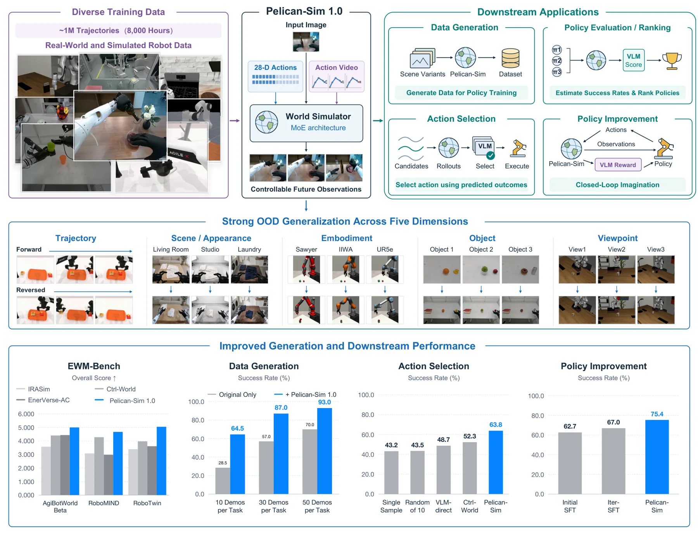
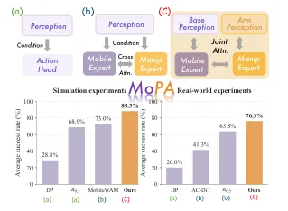
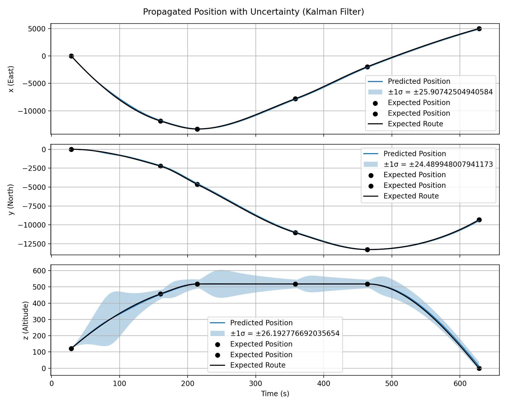
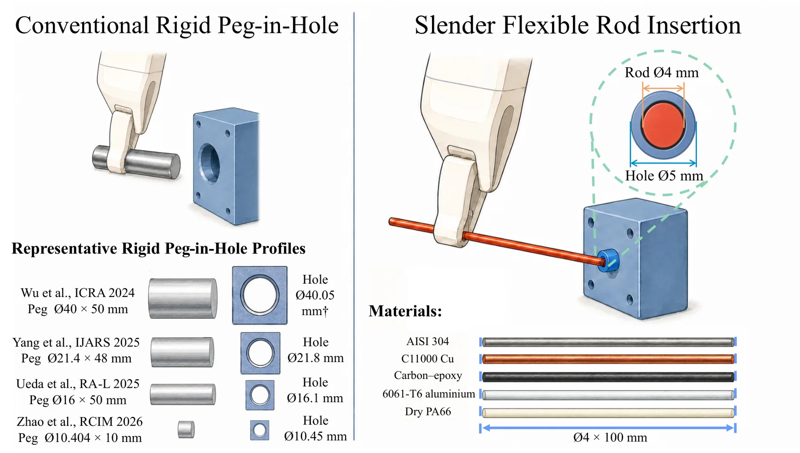
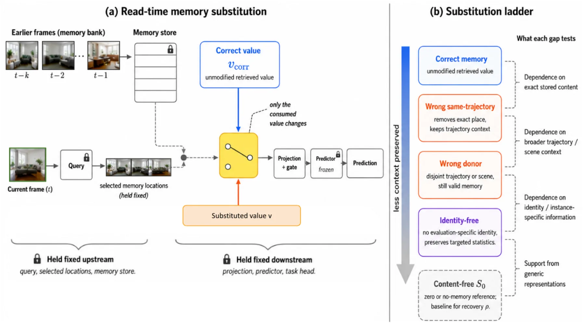

新论文 · 日期 2026-09-14 · score 9 · A层 · Robotic Foundation Models / VLA · cs.RO, cs.AI
内容级别：半海报（待补全）
作者：Shilong Zou, Shilin Zhang, Yingji Zhang, Yuhang Huang, Yi Zhang, Zeyuan Ding, Han Dong, Junwei Liao, Yong Dai, Jian Tang, Xiaozhu Ju
评分 9/10
世界模型具身智能动作条件视频稀疏 MoE策略评估
一句话工作总结：这是一项从 3D/动作表征走向具身决策的世界模型工作：关键不是只生成逼真视频，而是让动作条件能被策略训练和评估实际使用。最值得迁移的是 URDF/相机渲染的 action-visual injection、跨 embodiment 的统一动作空间和低步数 rollout；具体收益仍应在目标机器人上复现。
Pelican-Sim 1.0 从视觉上下文和机器人动作预测未来观测，统一数值动作与渲染动作视频，并用稀疏 MoE 和四步因果蒸馏提升跨 embodiment 的可控性与 rollout 效率。论文在约一百万条真实/仿真轨迹上训练，并报告了生成质量、数据增强、策略评估、动作选择和策略改进结果。
In this technical report, we propose Pelican-Sim 1.0, a general world model simulator for embodied intelligence that predicts future observations from visual context and robot actions to support downstream lea…

新论文 · 日期 2026-09-14 · score 9 · A层 · Robotic Foundation Models / VLA · cs.RO, cs.CV
内容级别：半海报（待补全）
作者：Guangyu Chen, Qiwei Liang, Shaolong Zhu, Tianxing Chen, Zikuan Xiao, Yifan Xie, Lingfeng Zhang, Ping Luo, Renjing Xu, Wenbo Ding
评分 9/10
移动操作感知-动作对齐Flow MatchingVLA底盘-机械臂协调
一句话工作总结：论文把移动导航所需的场景级几何与操作所需的局部几何分开建模，同时在动作层保持耦合。对空间智能路线的价值在于：不同控制子系统不应被迫共享同一感知摘要，子系统特定的不确定性和证据通道值得进入状态估计。
MoPA 为移动底盘与机械臂分别建立感知 query bank，并在结构化 Mixture-of-Transformers 解码器中进行 Perception2Action 对齐，再用耦合条件 flow matching 联合生成两类动作 chunk。论文在 ManiSkill-HAB 三个任务套件和四个真实任务上验证了协调性。
Mobile manipulation requires perceptual evidence at different spatial scales for base motion and arm control, while the two action modalities remain kinematically coupled. Existing policies often employ specia…

新论文 · 日期 2026-09-14 · score 8 · A层 · Robust State Estimation / Uncertainty · cs.RO
内容级别：半海报（待补全）
作者：Balram Kandoria, Seulki Kim, Aryaman Singh Samyal
评分 8/10
不确定性传播Kalman Filter多面体风险冲突检测
一句话工作总结：这是可靠状态估计方向的 A 级桥接工作：把状态协方差转成可与 3D 风险体比较的几何对象。
论文将 NURBS 轨迹、Kalman Filter 协方差传播和操作者条件天气多面体结合，用空间不确定性管与危险体网格相交进行冲突检测。
Strategic flight plan validation in Advanced Air Mobility (AAM) environments requires robust methods for predicting aircraft state uncertainty and detecting potential conflicts with dynamic airspace hazards. T…

新论文 · 日期 2026-09-14 · score 7 · A层 · Robotic Foundation Models / VLA · cs.RO
内容级别：半海报（待补全）
作者：Chuanbo Yu, Mingyu Yue, Yan Lyu, Chuhan Song, Peng Wang
评分 7/10
可变形物体Cosserat 杆Diffusion Policy世界模型
一句话工作总结：该工作把可变形物体的动力学预测接入动作选择，展示了世界模型如何在接触任务中减少执行前试错。
RodForesight 将粗略接近与预测插入分为两阶段，用 Cosserat 杆模型和动作条件世界模型预测候选动作对杆孔对齐的影响，再由 diffusion policy 选择动作块。
Slender rod insertion arises in precision manufacturing, where millimetre scale diameter and tight clearances demand accurate perception and control. Conventional peg-in-hole methods assume a rigid object whos…

新论文 · 日期 2026-09-14 · score 7 · A层 · Embodied Navigation / VLN / Spatial Reasoning · cs.CV
内容级别：半海报（待补全）
作者：Aditi Tiwari, Akshit Bhalla, Darshan Prasad, Heng Ji
评分 7/10
视频记忆因果审计世界模型空间记忆
一句话工作总结：这项工作为视频世界模型和空间记忆提供了直接的因果审计：记忆有用不代表检索内容被真正使用。
论文提出 read-time memory substitution，在保持其余计算不变时替换被消费的 memory value，以区分通用表征收益和对正确历史内容的特异依赖。
Video models increasingly use memory to preserve information over long sequences, with the assumption that gains come from retrieving and using the correct past content. Standard memory ablations test whether…